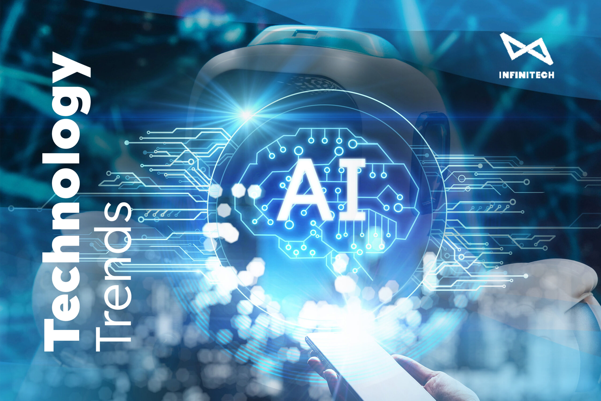

Blockchain: Mengubah Landasan Teknologi Menuju Era Transparansi dan Keamanan

Blockchain adalah teknologi revolusioner yang telah mengubah paradigma tradisional tentang bagaimana
data dan informasi disimpan, dikelola, dan dipertukarkan. Dengan menggunakan struktur data
terdesentralisasi dan enkripsi yang kuat, blockchain telah memberikan fondasi baru untuk sistem keamanan
dan transparansi dalam berbagai sektor, dari keuangan hingga logistik dan kesehatan. Blockchain telah
menjadi inti dari cryptocurrency dan juga menyediakan kerangka kerja untuk berbagai aplikasi inovatif.
Definisi dan Konsep Blockchain
Blockchain adalah jaringan terdesentralisasi yang menyimpan data secara transparan dan aman dalam
blok-blok terhubung yang saling terkait. Setiap blok berisi serangkaian transaksi dan memiliki tanda
waktu yang diverifikasi secara kriptografi. Data dalam blok tidak dapat diubah atau dihapus tanpa
persetujuan mayoritas jaringan, sehingga memastikan keamanan dan integritas data.
Konsep Utama dalam Blockchain
- Desentralisasi: Tidak ada otoritas sentral yang mengendalikan blockchain. Data disimpan dan dikelola
oleh banyak node yang terdistribusi di seluruh jaringan.
- Transparansi: Semua transaksi dan perubahan data dapat dilihat oleh semua peserta jaringan. Ini
menciptakan tingkat transparansi yang tinggi dan meminimalkan risiko kecurangan.
- Keamanan Kriptografi: Setiap blok dalam blockchain memiliki tanda waktu dan tautan ke blok
sebelumnya dengan kode kriptografi yang kuat, sehingga menjaga integritas data dan mencegah
perubahan yang tidak sah.
Penerapan Blockchain dalam Berbagai Bidang
- Keuangan dan Cryptocurrency: Blockchain adalah landasan untuk cryptocurrency seperti Bitcoin dan
Ethereum, memungkinkan transaksi dan pembayaran yang aman dan transparan tanpa melibatkan lembaga
keuangan tradisional.
- Logistik dan Rantai Pasokan: Dalam industri logistik, blockchain memastikan jejak lengkap dari
sumber hingga tujuan, mengoptimalkan rantai pasokan dan memastikan keaslian produk.
- Kesehatan: Dalam bidang kesehatan, blockchain dapat digunakan untuk menyimpan data medis dengan aman
dan memberikan akses yang terkontrol kepada pasien dan tenaga medis.
- Voting Elektronik: Blockchain dapat digunakan untuk memastikan integritas dan keabsahan suara dalam
sistem voting elektronik.
- Konten Digital: Dalam industri hiburan, blockchain memungkinkan distribusi dan lisensi konten
digital dengan adil dan aman.
Tantangan dalam Implementasi Blockchain
- Skalabilitas: Menjaga kinerja dan kecepatan transaksi dalam jaringan blockchain yang besar adalah
tantangan teknis yang harus diatasi
- Regulasi dan Keamanan: Beberapa aspek hukum dan keamanan blockchain masih menjadi perhatian,
terutama terkait dengan keamanan data pribadi dan peraturan di berbagai negara.
- Kesadaran dan Pendidikan: Peningkatan kesadaran dan pemahaman tentang teknologi blockchain di
kalangan masyarakat dan bisnis sangat penting untuk penerapan yang lebih luas.
Kesimpulan
Blockchain adalah teknologi yang membuka pintu menuju era baru dalam keamanan dan transparansi data.
Dengan landasan desentralisasi, blockchain telah merevolusi berbagai sektor dan memberikan potensi yang
tak terbatas untuk inovasi dan kemajuan masa depan. Meskipun masih ada beberapa tantangan yang harus
diatasi, seperti skalabilitas dan regulasi, potensi blockchain untuk menciptakan perubahan yang positif
dalam cara kita berinteraksi dengan data dan informasi sangat menjanjikan. Dalam beberapa tahun
mendatang, blockchain akan terus menjadi pendorong transformasi digital yang kuat dan memberikan manfaat
besar bagi masyarakat global